Home
Cervix
Vagina
Vulva
Perineum and perianal region
Cytology
Histology
Glossary
Squamo-collumnar junction (SCJ)
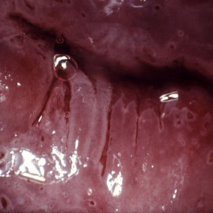
(21) (Courtesy of Dr. M. Brocic)
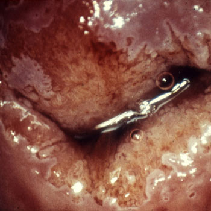
(22) (Courtesy of Dr. M. Brocic)
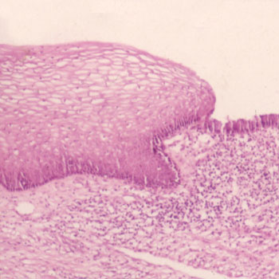
(23) (Courtesy of Dr. N. Ostojic)
SCJ Visible
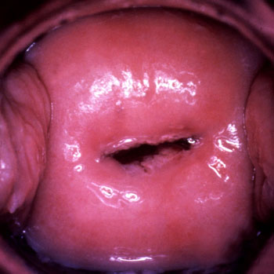
(243)
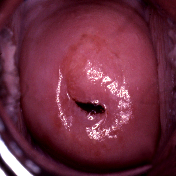
(432)
(775)
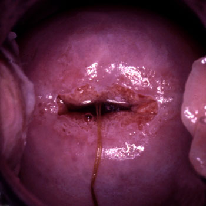
(1466)
Back
Top
SCJ Partially visible
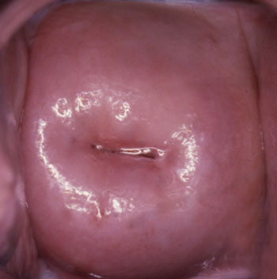
(784)
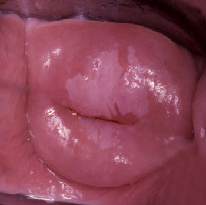
(2723)
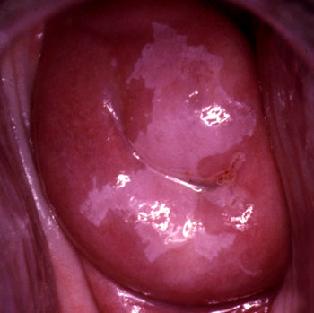
(3124)
SCJ Not visible
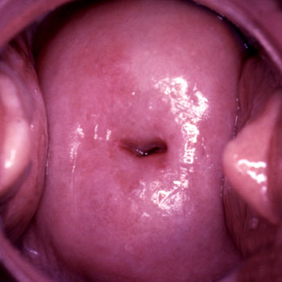
(1114)
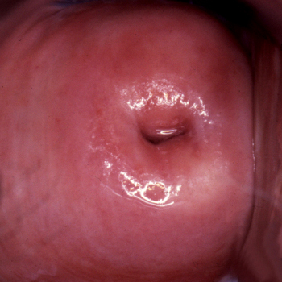
(2012)
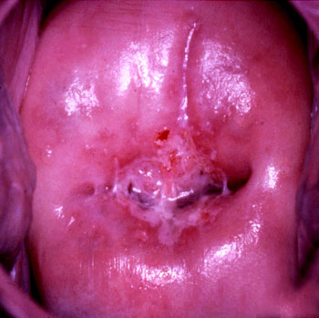
(3075)
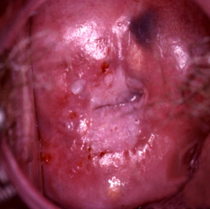
(3164)
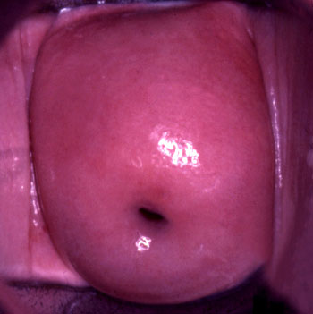
(4208)
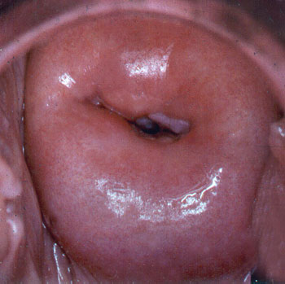
(5477)
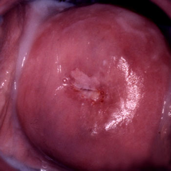
(6052)
(Pictures courtesy of Prof.Dr. Vesna Kesic except where marked differently)
Back
Top